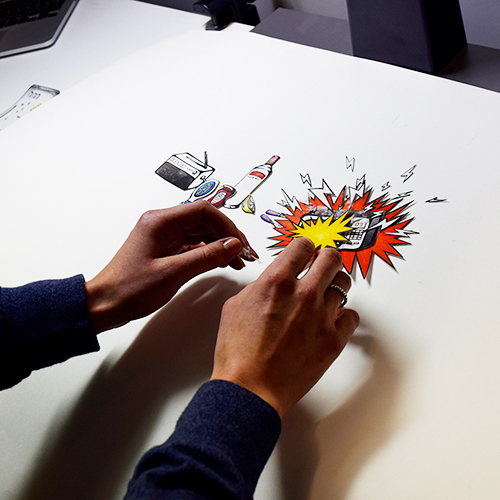
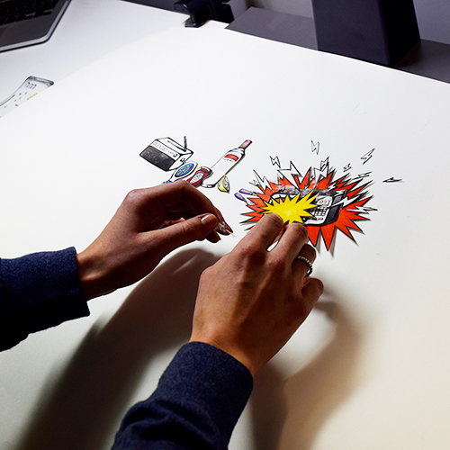

BBC Radio 1
The brief
Using audio that contrasts to the visuals of an animation to tell a deeper story. In this case, showing the reality of a hangover whilst listening to pretentious health tips that people pretend they do. Working in collaboration with designer Katie Barker.
The solution
A stop motion animation illustrating the expectations vs the reality of dealing with a hangover. This is something that could be discussed during a BBC Radio 1 segment, that would be promoted over social media platforms such as Instagram and Facebook.
Behind the scenes
To create this motion graphic, we practiced stop motion techniques and experimented with different styles of illustrations and backgrounds. The filming process took 20 hours, spanning across 2 days, in order to capture all the images. The tripod, monitor display and camera remote were essential to keeping the animation frames consistent.
 
